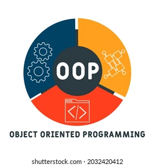

About Me
My name is Matthew McEntire. Born and raised in Sandy, UT. I am an avid swimmer since I was a little boy. Swimming, playing water polo and track/Cross Country were my go to sports. I attended Brighton High School where I graduated and then Joined the United states Marine Corps Reserve. After a year of the Marines, I served a mission or religious sabbatical for the Church of Jesus Christ of Latter Day Saints in Panama City, Panama. Immediately following my mission, I returned to serve six years with the Marine Corps and attended the University of Utah to study Middle Eastern Studies. After two years of studying Arabic and the history of the Near East, I switched my major to Computer science with an emphasis in information security. I graduated from Southern New Hampshire in computer science. All while serving in the Marine Corps Reserve and studying, I was working as a software engineer in test for many years. Following 8 years as a SDET within the industry, I made a career change to become a software engineer. Some of my hobbies include hiking, backpacking, camping, kayaking, reading, writing and engaging in the occassional Spartan and tough mudder races. And Last but certainly the most important, I am married to a wonderful panamanian woman whom I met on my mission and I have two wonderful children, a boy and a girl.
Skills
Languages


Certificates
Testing frameworks


Tools


Paradigms

Experience
Software Development Engineer in Test
Placeholder
Software Engineer

Placeholder
Projects

Please contact me at the following addresses: